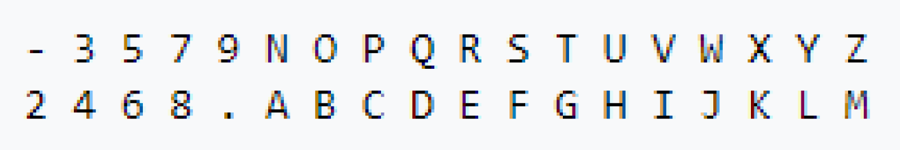
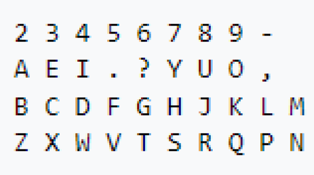
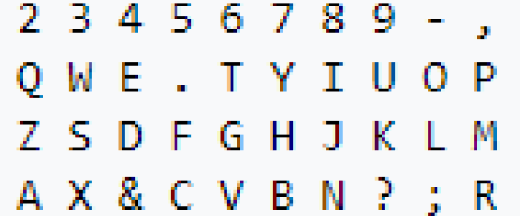
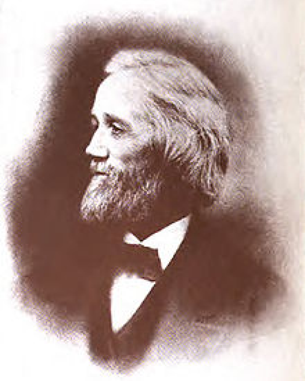
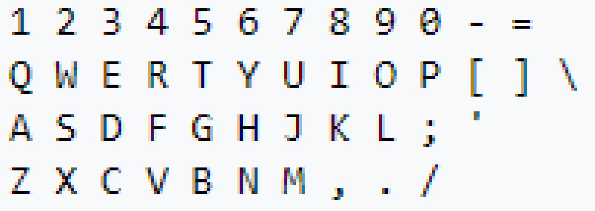
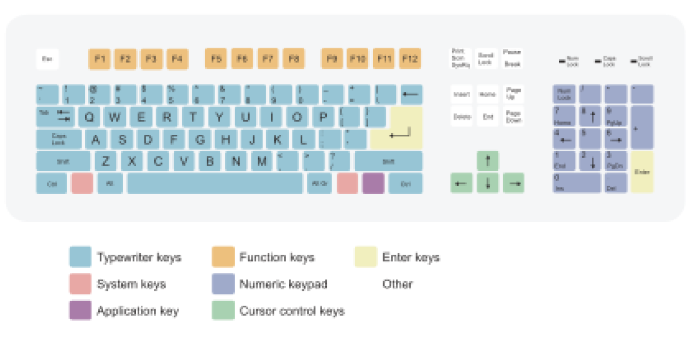
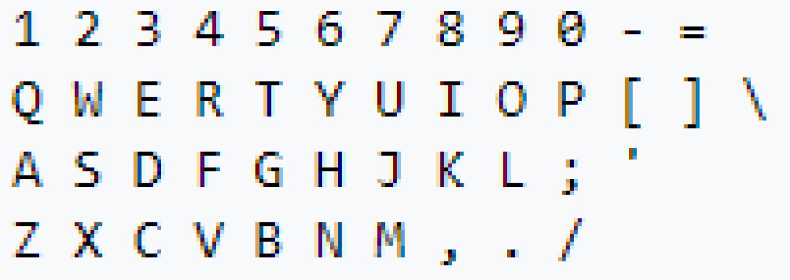
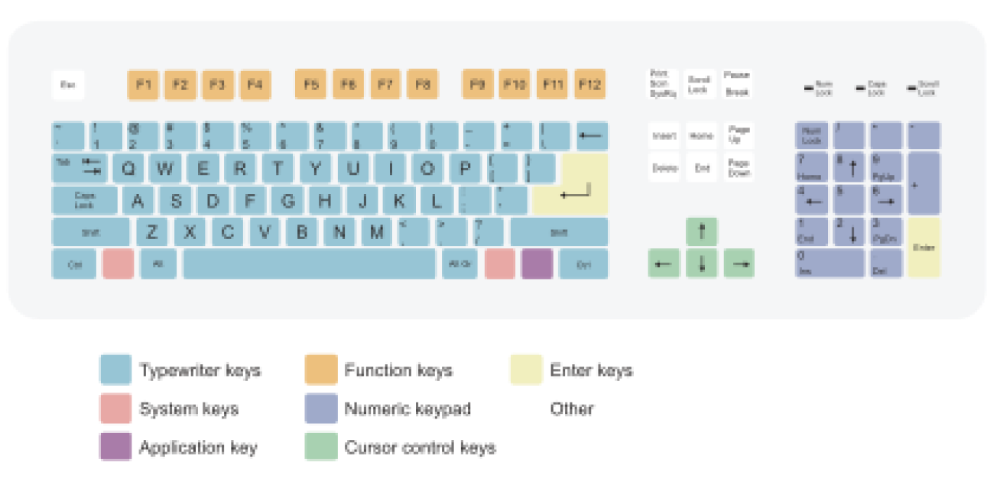

History of Typing
In November 1868 Sholes changed the layout like this:
In 1873 Sholes's backer, James Densmore, successfully sold the manufacturing rights for the Sholes & Glidden Type-Writer to E. Remington and Sons. The keyboard layout was finalized within a few months by Remington's mechanics and was ultimately presented:
After they purchased the device, Remington made several adjustments, creating a keyboard with essentially the modern QWERTY layout. These adjustments included placing the "R" key in the place previously allotted to the period key. Apocryphal claims that this change was made to let salesmen impress customers by pecking out the brand name "TYPE WRITER QUOTE" from one keyboard row are not formally substantiated.[2] Vestiges of the original alphabetical layout remained in the "home row" sequence DFGHJKL
The modern layout is:



The modern layout is:
The current keyboard layout used now is
:
:

Before the age of the computer, typewriters fulfilled our need to write faster than our pens would allow.
Christopher Latham Sholes (February 14, 1819 %E2%80%93 February 17, 1890) was an American inventor who invented the QWERTY keyboard,[2] and, along with Samuel W. Soule, Carlos Glidden and John Pratt, has been contended to be one of the inventors of the first typewriter in the United States.[3][4][5] He was also a newspaper publisher and Wisconsin politician. In his time, Sholes went by the names C. Latham Sholes, Latham Sholes, or C. L. Sholes, but never "Christopher Sholes" or "Christopher L. Sholes".
History of qwerty keyboard (how did it come to be)
The QWERTY layout was devised and created in the early 1870s by Christopher Latham Sholes, a newspaper editor and printer who lived in Kenosha, Wisconsin. In October 1867, Sholes filed a patent application for his early writing machine he developed with the assistance of his friends Carlos Glidden and Samuel W. Soul%C3%A9..[1]
The first model constructed by Sholes used a piano-like keyboard with two rows of characters arranged alphabetically as shown below:

Christopher Latham Sholes (February 14, 1819 %E2%80%93 February 17, 1890) was an American inventor who invented the QWERTY keyboard,[2] and, along with Samuel W. Soule, Carlos Glidden and John Pratt, has been contended to be one of the inventors of the first typewriter in the United States.[3][4][5] He was also a newspaper publisher and Wisconsin politician. In his time, Sholes went by the names C. Latham Sholes, Latham Sholes, or C. L. Sholes, but never "Christopher Sholes" or "Christopher L. Sholes".
History of qwerty keyboard (how did it come to be)
The QWERTY layout was devised and created in the early 1870s by Christopher Latham Sholes, a newspaper editor and printer who lived in Kenosha, Wisconsin. In October 1867, Sholes filed a patent application for his early writing machine he developed with the assistance of his friends Carlos Glidden and Samuel W. Soul%C3%A9..[1]
The first model constructed by Sholes used a piano-like keyboard with two rows of characters arranged alphabetically as shown below:
 


